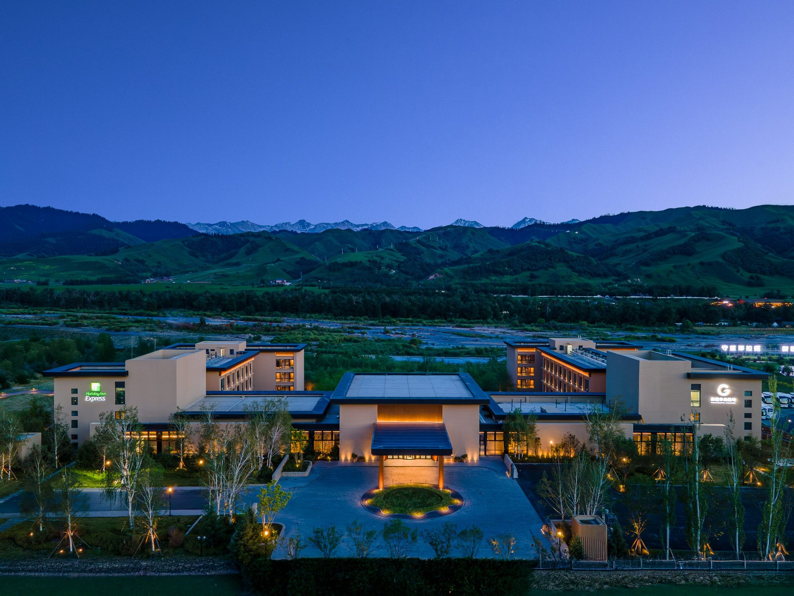
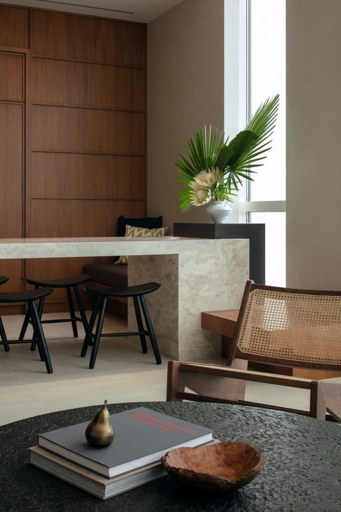

The studio
Architecture for hospitality. A sense of place.
H2 Architecture is a Shanghai-based practice working across hotels, resorts and hospitality-led mixed-use projects. Its work connects architectural design with destination planning and the needs of owners and hotel groups.

From the first idea to the architectural experience.
The practice’s published services span strategy, planning, architectural design and project coordination. Hotels and resorts are the core of its work, alongside tourism destinations, residential developments and mixed-use projects.
The portfolio is presented here as a connected body of work: places to arrive, stay, meet and return to. Each project page retains a link to its source record so that the architectural story and the documented facts remain connected.
- 01
Strategy
Research, positioning, product advice and development phasing.
- 02
Planning
Destination, tourism and urban planning.
- 03
Architecture
Urban hotels, resort hotels and luxury villas.
- 04
Coordination
Project-management consultancy and general coordination.

Founder / Chief architect
Yu Hong
Yu Hong is H2’s founder and chief architect. He holds a Master of Architecture from the University of Arizona. Before H2, he worked with WATG for more than a decade, including as a senior designer and associate.
His published biography spans master planning, urban hotels and destination resorts. Experience gained before H2 belongs to his individual career history and should not be confused with projects commissioned to the H2 practice.
A conversation starts with a place and an ambition.
Start a conversation